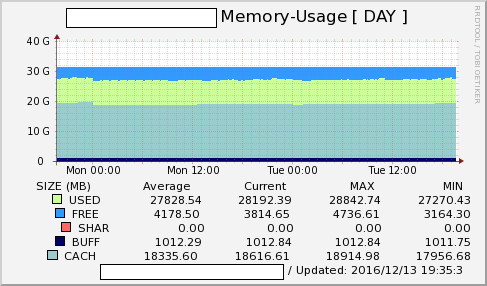
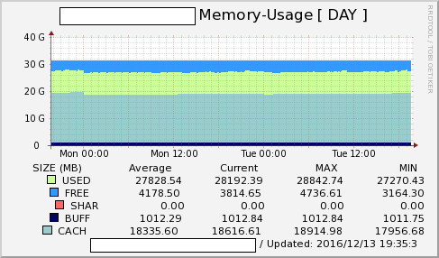

### Corona is SNMP Collector.
This SNMP Async Client Collector and RRD Graph Generator : C and Perl based.
Designer Templates
C and Perl based.
Sample Gallery Web-corona
 

Authors and Contributors
Author : couplewith@knou.ac.kr
Since : 2000
Support or Contact
.